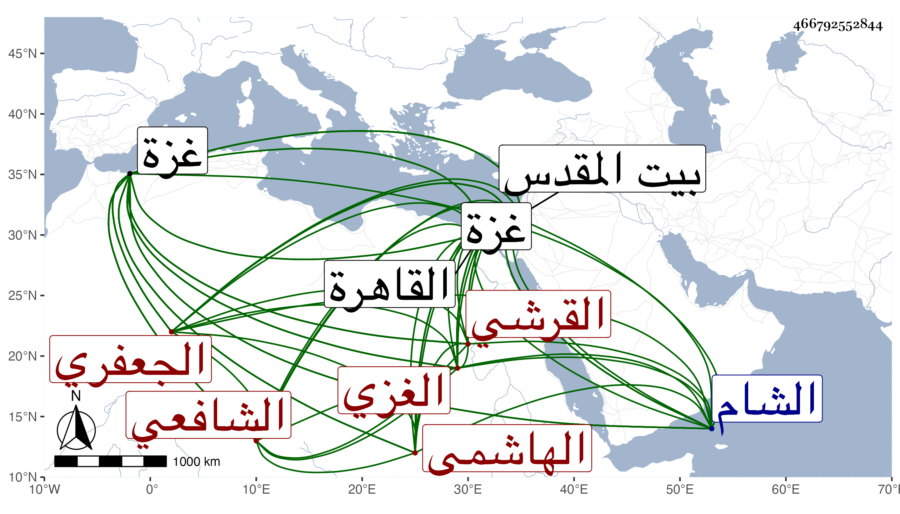

0902Sakhawi.DawLamic.ITO20230111-ara1.EIS1600.466792552844
Biography ID: 466792552844
450
محمد بن محمد بن عمر بن محمد الشمس القرشي الهاشمي الجعفري الغزي الشافعي ويعرف بابن الأعسر . ولد سنة ثلاث وستين وسبعمائة أو سنة اثنتين الشك منه وحفظ المنهاج وعرضه على الندر محمود العجلوني نزيل بيت المقدس وتفقه عليه وأجازه بل أذن له بالإفتاء بشرط التثبت والتقوى وكذا أذن له الجلال البلقيني في سنة تسع وثمانمائة وسمع عليه جزءا من عوالي ولده وسمع في سنة خمس وتسعين من أحمد بن محمد بن علي الجاكي الكردي الصحيح وكذا سمعه على العلاء على بن خلف قاضي غزة غير مرة قالا أنا الحجار ومن التقى ألفاسي تحصيل المرام من تأليفه . وأجاز له في سنة اثنتين وثمانين البهاء بن عقيل وولي قضاء الحنفية بغزة فأقام نحو سنتين ثم صرف ورأيت من قال أن المشير عليه بالتحنف حينئذ شيخه ابن خلف ، وناب في قضاء الشافعية بها أشهرا عن ابن مكنون فلما تحرك الرحبي الخارجي وطلب من أهل عزة مالا ورام مصادرتهم قام فجمع الناس وحاربوه وتحزب معه أهل البلد بعد أن حصنوها وخندقوها ولكن باطنه جماعة حتى مكنوه من الجهة الشرقية بحيث دخل البلد ورام حينئذ القبض على صاحب الترجمة فنجا بنفسه إلى القاهرة فأقام بها ثم ولي قضاء الشافعية بغزة استقلالا فأقام بها مدة وصرف عنها مرتين الأولى بالعلاء الخليلي والثانية بالشهاب الزهري ، وحدث ودرس وأفتى وكان فقيها فاضلا علامة قال التقى بن قاضي شهبة أنه كان يرصد للكلف ما يتحصل من القضاء ويرضى هو بالاسم والنار وسمعت المؤيد في أعقاب الفتنة حين كان نائب الشام بعده في أجواد القضاة وممن أخذ عنه الشمس بن الحمصي واستقر في القضاء بعده . ومات بغزة قاضيا في رجب سنة ست وأربعين رحمه الله وإيانا .
